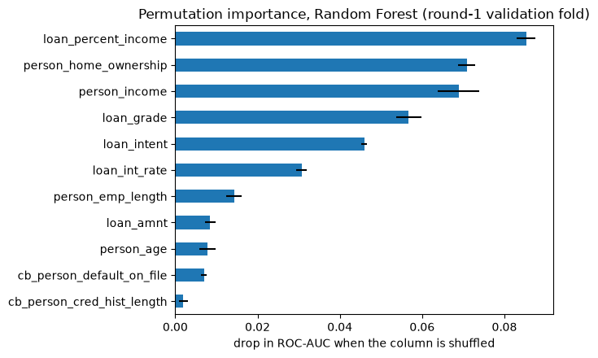
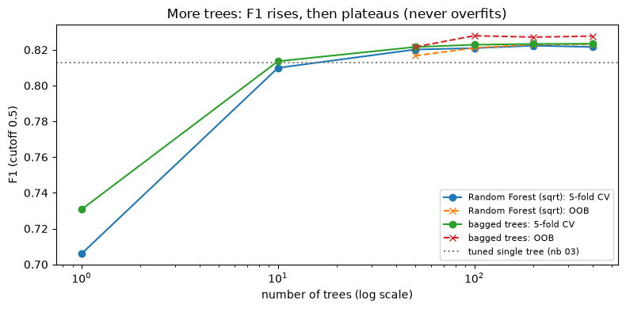

Result analysis: why the results look like this
Seven findings. Each card can be read on its own: what we saw, why it happens, the evidence from our notebooks, and a one-line takeaway. Simple counts and shares quoted here are recomputed in 13_website_checks.ipynb.
The three settings compared on this site (they differ only in what is known when the
decision is made):
Reference a loan that is already priced: the applicant's grade and the interest rate are both known.
Pipeline A a graded applicant: the applicant has a grade (A–G, a credit-history rating like a credit score), the interest rate is not set yet.
Pipeline B a newcomer: no grade and no rate, only what the applicant tells us.
Why we compare all three →
Reference a loan that is already priced: the applicant's grade and the interest rate are both known.
Pipeline A a graded applicant: the applicant has a grade (A–G, a credit-history rating like a credit score), the interest rate is not set yet.
Pipeline B a newcomer: no grade and no rate, only what the applicant tells us.
Why we compare all three →
Terms used on this page.
PD = probability of default (0 to 1). F1 (0 to 1, higher is better) = how well defaulters are caught without
wrongly declining good customers; it combines recall (share of defaulters caught) and precision (share of declined
applicants who really default). Brier score (lower is better) = how close the PDs are to what happened.
R² (0 to 1, higher is better) = share of the differences in interest rates that a model explains; pp = percentage
points. Validation = 5-fold cross-validation on the training set; test = the 20% hold-out used once at the end.
1. The grade (a summary of the credit history) carries most of the information
What we saw
We ran three settings on the same test applicants. Pipeline A, which knows the grade but not the interest rate, predicts default as well as the Reference, which knows both: F1 0.837 vs 0.838, Brier 0.053 vs 0.052. Its rate model explains 91% of the differences in rates (R² 0.907). Pipeline B, a newcomer with neither, does clearly worse: F1 0.699, Brier 0.086, rate R² 0.305.
Why
The grade (A best … G worst) is a combined evaluation of the applicant's credit history, summarised in one letter, much like a credit score such as CIBIL. The applicant details hold only two simple history facts (past default yes/no and length of credit history) next to facts about the applicant today (age, income, loan size, home ownership); the grade sums up the whole history. The lender sets the interest rate mainly from the grade, so once the grade is known, the rate adds nothing new.
What this means for Pipeline B. A newcomer has no grade, so the models lose this summary. They can still see today's risk (for example a large loan relative to income), which is why F1 is still 0.70, but the PDs are less sharp (higher Brier) and the rates much rougher (±2.7 pp instead of ±1.0 pp), because the lender's pricing follows the grade and the details cannot rebuild it. Since a grade, like a credit score, is normally universal and available when someone applies, Pipeline A is our main pricing pipeline and Pipeline B the fallback for applicants without a credit history.
What this means for Pipeline B. A newcomer has no grade, so the models lose this summary. They can still see today's risk (for example a large loan relative to income), which is why F1 is still 0.70, but the PDs are less sharp (higher Brier) and the rates much rougher (±2.7 pp instead of ±1.0 pp), because the lender's pricing follows the grade and the details cannot rebuild it. Since a grade, like a credit score, is normally universal and available when someone applies, Pipeline A is our main pricing pipeline and Pipeline B the fallback for applicants without a credit history.
Proof
The grade alone predicts the interest rate with R² 0.903 (nb 09). Grades A and B contain no applicant with a past default, while C–G contain about 50%, so the grade clearly reflects the credit history. Guessing the grade from the details is right only 49% of the time (nb 07). In the Random Forest's permutation importance (below), grade is the 4th most important input and the rate only the 6th.
In short
If the grade is available, use it: it makes both the approve/decline decision and the price accurate. Without it the models still work, but less precisely.

2. Trees and forests beat straight-line models
What we saw
In cross-validation on the training set (Reference setting), the tree models clearly beat the straight-line (linear) models at predicting default: Random Forest F1 0.830 and a single decision tree 0.813, against about 0.68 for logistic regression and the linear SVM.
Why
Default risk here follows yes/no rules that combine features, for example "renting and borrowing more than about 31% of income". A linear model gives each feature its own fixed weight and adds them up, so it cannot express "only when both are true". A tree asks a sequence of yes/no questions, so it captures such combinations directly.
Proof
In a depth-3 tree (below), applicants who rent and borrow more than ~31% of their income (7.2% of all applicants) all defaulted. The best linear model still misclassifies about 13% of training applicants whatever its margin setting C (notebook 02, Step 5).
In short
Default in this data depends on combinations of conditions, which trees capture and straight lines cannot.

3. A forest of trees beats a single tree
What we saw
In cross-validation, one fully grown decision tree scores F1 0.746. Averaging 300 trees, each trained on a different random resample of the training data (bagging), raises this to 0.824. A Random Forest, which in addition lets each split choose only among a random subset of features, does best (0.830).
Why
A single deep tree memorises its training data (training F1 = 1.0), so it makes many confident mistakes on new applicants (overfitting). Trees trained on different random samples make different mistakes, and averaging them cancels much of the error. Restricting each split to a random subset of features makes the trees even more different from each other, so even more errors cancel.
Proof
Average correlation between the trees' predictions (lower = trees disagree more = more errors cancel): 0.64 with all features (bagging), 0.57 with random feature subsets (Random Forest). Validation F1 rises with the number of trees and levels off after about 100 (below); adding trees never makes it worse.
In short
Many different trees averaged are more reliable than one tree; this is why the Random Forest was chosen in every setting.

4. SMOTE (synthetic defaulters) did not help
What we saw
Only 22% of applicants default. SMOTE creates synthetic defaulters so the training data becomes 50/50. With logistic regression at the standard cutoff, it raised recall (0.56 → 0.77) but lowered precision (0.77 → 0.55), so F1 stayed at 0.645. Once the cutoff was tuned for each, F1 was 0.676 with SMOTE and 0.674 without: essentially equal.
Why
Training on a 50/50 world makes the model give higher scores to everyone. That moves the decision line, which is exactly what lowering the cutoff does. It does not teach the model anything new about who defaults, so once the cutoff is tuned the two give the same result.
Proof
Logistic regression with and without SMOTE ranks applicants almost identically (rank correlation 99.5%); only the F1-best cutoff moves, from 0.36 (no SMOTE) to 0.67 (SMOTE) (nb 13). The same pattern held for the linear and RBF SVMs: SMOTE changed precision and recall but never raised F1 once the cutoff was tuned.
In short
Tuning the cutoff does the same job as SMOTE, more simply; the final Random Forests use no SMOTE.
5. The models miss defaulters who look safe
What we saw
On the test set the models approve some applicants who later default. Pipeline A misses 26% of the 1,418 defaulters and Pipeline B 39%. These misses are very uneven: they pile up among applicants who look safe on paper.
Why
The models catch risk that is visible in the data, such as a large loan relative to income or renting. Defaulters with comfortable-looking profiles probably defaulted for reasons the data does not record, such as losing a job or an illness after the loan was given, so no model could see it coming.
Proof
Share of test-set defaulters in each group that were missed (approved):
Try it: on the Explore tab choose "defaulters the chosen pipeline approved".
| Test-set defaulters who were | missed by A | missed by B |
|---|---|---|
| homeowners with a mortgage | 53% | 71% |
| borrowing ≤ 10% of income | 49% | 75% |
| in the highest-income quarter | 34% | 78% |
| borrowing > 30% of income | 4% | 5% |
In short
The models catch risk that shows in the numbers; defaults caused by events the data does not record cannot be predicted.
6. A newcomer's interest rate can only be guessed roughly (R² ≈ 0.3)
What we saw
For a newcomer (Pipeline B, no grade), every rate model explains only about 30% of the differences in interest rates (R² ≈ 0.30; typical error ±2.7 pp). With the grade (Pipeline A) it is 91% (±1.0 pp). R² = 1 would mean every rate is predicted exactly; R² = 0 means no better than giving everyone the average rate.
Why
The lender sets the rate mainly from the grade, and the grade summarises the full credit history, of which the applicant details contain only two simple facts. Two newcomers with the same age, income and loan can have very different grades because of their past, so from their details alone the rate can only be guessed roughly: right on average, but several points off for individuals.
Proof
- Same ceiling for every model. Six very different methods (linear, Ridge, Lasso, Random Forest, gradient boosting, two-stage) all stop at R² ≈ 0.30. When every model hits the same wall, the limit is the information, not the model (nb 07).
- Guessing the grade first does not help. The two-stage model predicts the grade, then the rate. The grade is right only 49% of the time and E, F or G is never predicted: those grades are rare (≈ 4% of loans) and their applicants look like A–C applicants (median income $58–71k vs $53–58k; same median age 26; 47% have income, loan size and loan-to-income all within the normal A–C range).
- Pulled towards the middle. On the test set, newcomers actually charged under 8% get suggestions about 3.1 pp too high; those charged over 17% about 5.5 pp too low.
- World Bank check. Premium = rate minus the US prime rate. Per PD band the average suggested premium matches the actual one (+6 to +8 pp), but real premiums within a band spread about 3× more than the suggestions (see the box plots on the Results tab).
In short
Without the credit-history grade, no model can price a newcomer precisely; Pipeline B's rate is a rough starting point, which is why Pipeline A is the main pricing pipeline.

7. The data's pricing looks real, but its default rates look extreme
What we saw
Two things in the data do not fit together. The interest rates look like real lending: they rise steadily from grade A to G. But the default rates are extreme: 21.9% of all loans and 98% of grade G loans defaulted.
Why
A lender who charges about 20% interest to a group where 98% default loses almost the whole loan on nearly everyone; no real lender could keep doing that. Real data is also messy, while this data contains rules with no exceptions at all. Both suggest the dataset is partly simulated, or describes an unusually risky group of borrowers.
Proof
- Pricing looks real. World Bank check: the premium (interest rate minus the US prime rate, i.e. what a borrower pays above the rate for the safest customers) rises steadily from +3.5 pp (grade A) to +16.4 pp (grade G), as in real risk-based lending.
- Defaults look extreme. Default rates by grade (calculated from the data, not predicted; 29,315 cleaned loans with a recorded rate): A 10%, B 16%, C 21%, then D 59%, E 65%, F 70%, G 98%.
- Rules without exceptions. Every applicant who rents and borrows over ~31% of income defaulted (about 1,870 people); grades A and B contain no applicant with a past default, while C–G contain about 50%.
In short
The pricing is realistic, but the default pattern is too clean and too extreme to be typical; our high scores may not carry over to real lending data.

What this means for the conclusions. Clean, rule-like data is easy for tree models to learn,
so these scores may be higher than the same models would reach on real lending data. The results describe this dataset.